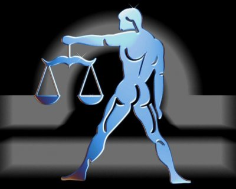

(23 Eylül - 22 Ekim)
GRUP:Hava/erkeksi/öncü,Pozitif
YÖNETİCİ GEZEGEN:Venüs
RENK:Pastel renkler
UĞRLU TAŞ:Opal, pembe kuvartz
ŞANSLI SAYI:6
ŞANSLI GÜN:Cuma
KARŞIT BURÇ:Koç
ŞEHİRLER:Viyana, Frankfurt
METAL:Bakır
ÇİÇEKLER:Krizantem, beyaz gül, sarı papatya
AĞAÇLAR:Servi Diş budak, asma, incir, elma, kayısı, badem, eğrelti otu
Kararsızlıkları ile ünlü cazibe sembolü karşınızda duruyor. Nedenini bilmediğiniz bir çekim gücü etkisi altına girdiğinizi fark ettiğinizde iş işten çoktan geçmiş olacaktır. Onların büyülü bir havası vardır. Ritmik hareketleri ile dans eder gibi bir yaşam sürer. Onun yanında kızgınlıklarınız yok olur. En sinirli anınızda bile sizi regüle etme yeteneğine sahiptir. Üstelik, tartışmayı sevmesine rağmen; bu kadar ustalıkla konulara hakim olup, sonrada sesini hiç yükseltmeden zaferini ilen eden çok az kişi vardır. Bir Terazi bunu başarır. Sizin kılıç salladığınız ortamlarda, o; gülücüklerini, zarafetini ve öpücüklerini gönderecektir. Kafasında müthiş bir denge vardır. Onun ne düşündüğünü bilemezsiniz. Uyumlu ve sevecen yapısının altında gizli bir güç vardır. Bulunduğu ortamları çok çabuk inceler ve gizli detayların nerede saklı olduğunu bulmaya çalışır. Konuya hakim olmak için deliler gibi çalışmak ve kendini harap etmek yerine, keskin görüşlerini ve doğru mantığını kullanacağı ortamları seçer. Başarılı olmak için imkansızlığı değil, kendini yüceltecek elle tutulur konular üzerinde uyumlu bir sessizlikle çalışır. Yaptığı işlerin doğruluğuna inandığı halde, onay beklemekten de kendini alamaz. Onu tenkit etme gibi bir şansınız asla olamaz. Böyle bir şeye kalkıştığınız taktirde; size tüm zarafetiyle gülümseyecek, önerilerinizi can kulağıyla dinleyecek ve sonunda kibarca teşekkür ederek sizden uzaklaşacaktır. Fakat bir daha asla sizin fikrinizi sormayacaktır. Gülümseyen çehresinin altında müthiş bir ego gizlidir, aşk ve sanat onun yaşam öğeleridir. Dünyada her şeyden vazgeçebilir, fakat kişiliğini besleyen ve duygusallığını yansıtan soyut kavramlarından vazgeçemez. Akıl, mantık, aşk işte karşınızda her şeyiyle özel bir kişi duruyor. Onun terazilerinin kefesinde yer almak istiyorsanız, belli standart ölçülerin çok üstünde olmanız gerekir. Kolay bir insan olmadığını şimdiden hatırlatırız.
Terazi burçlarının fiziksel yapıları çok güçlüdür. Zodyak’ın en güzel kişileri diyebiliriz. Uzun boylu, ince vücutlu, düz kahverengi saçlı, yuvarlak yüzlü, beyaz tenli ve koyu renk gözlüdürler. Terazi bir denge burcudur. Önemsiz bir dengesizlik hassas vücutlarını alt üst etmeye yeterlidir. Hastalıkları sırasında yoğun ilgi beklerler. Aradıkları ilgiyi bulamadıkları zaman, huysuzlaşarak daha çok hastalanırlar. İç dünyasında dalgalanmalar yüzünden, baş ağrısı ve aşırı yemek eğilimi gösterirler. Sinir sistemleri midelerini etkilediği için midedeki asit fazlalığını fosfor içerikli yiyeceklerle dengelemelidirler. Terazilerin metabolizması çok yavaş çalışır. Baharatlı, soslu, şekerli gıdalara düşkün olması nedeniyle, çok fazla kilo almaya müsaittir. Yaşam boyunca sürekli egzersiz yapmak zorundadır, aksi taktirde ileri yaşlarda şişmanlık kaçınılmaz olur. Terazi insanları; yapılı, fakat çok çabuk hastalanan kişilerdir. Sağlıklı görünüşlerine karşın, soğuk algınlıklarına çok çabuk yakalanırlar. Terazileri; böbrekler, bel bölgesi, sırt ve omurgaları simgeler. Ayrıca, Venüs etkisinde oldukları için troidler düzensiz çalışabilir. Kilo problemi olan Terazilerin, ara sıra hormon testleri yaptırmaları gerekebilir. İleri yaşlarda romatizmal rahatsızlıklara aday kişilerdir. Terazilerin, herkesten daha çok kendilerine özen göstermeleri gerekiyor ki, zaten çoğu bu konuda duyarlı olurlar. Kendilerine özen gösteren insanlar en çok bu burçtan çıkar.